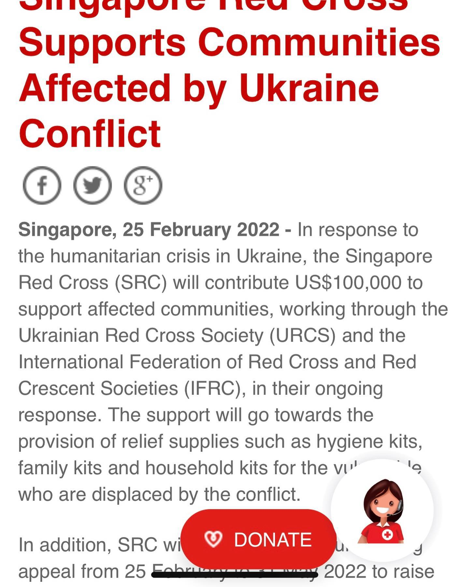
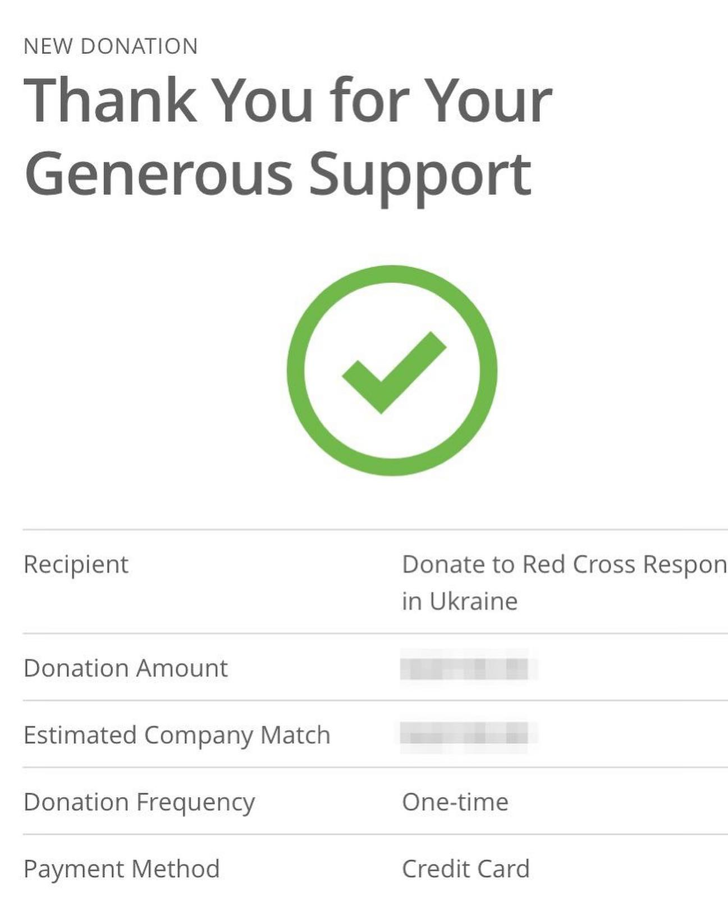

Our family’s donations are going to Singapore Red Cross (SRC) campaign. Thanks to our employers they were doubled. There are multiple platforms to pay through (e.g. Giving, Benevity, iRaiser, others). See all details in bit.ly/sg-redcross-ua • Please stay alert, there are multiple scam campaigns acting worldwide. • Please help prevent spread of panic and fake news, and focus on helping personally, if you can, those whom you are able to reach on either of the sides of the conflict. • We hope that RedCross donations won't be subject to assessment under 2022-02-27 Prosecutor's Office statement "Russian Citizens financial donations to Ukrainean causes will be assessed under Article 275 of Criminal Code as a High Treason" - more details bit.ly/ua-donations-treason. Also note that Travel Rule of Monetary Authority of Singapore (notice PSN02) requires onshore logging of declared values and receivers of crypto currencies transfers originated by Singapore Residents, even to anonymous wallets.
2022-03-01 21:29:07
Back to main page